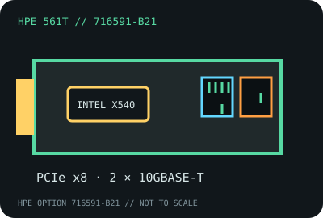

[ MODEL-SPECIFIC NETWORK HARDWARE RECORD ]
HPE Ethernet 10Gb 2-port 561T Adapter (716591-B21)
A dual-port copper server adapter sold as HPE option 716591-B21. The part number and server qualification matter; the common Intel controller name does not make every X540 card a supported HPE replacement.

IDENTIFICATION: Exact HPE SKU / option part number 716591-B21, model 561T. Check the label and the receiving server’s option support before installation; do not identify solely by Intel silicon.
Exact SKU, interface and compatibility
| Exact model / SKU / revision | HPE Ethernet 10Gb 2-port 561T Adapter, 716591-B21. HPE’s published option number is the SKU; board-revision applicability should be confirmed from the individual card label and HPE support record. |
|---|---|
| Controller | Intel Ethernet Controller X540 family, dual-port 10GBASE-T; the HPE option record does not establish that unrelated retail X540 cards share HPE firmware or qualification. |
| Bus, ports and connectors | PCI Express 2.1 x8; two 8P8C/RJ-45 copper ports; adapter bracket and chassis clearance depend on the installed HPE server configuration. |
| Per-port link rates | 10GBASE-T and 1000BASE-T Ethernet. Use the card/driver specification for supported link modes; no 2.5G or 5G rate is claimed for this SKU. |
| Driver and operating systems | HPE publishes 561T driver/support packages for qualified Windows Server, Red Hat Enterprise Linux, SUSE Linux Enterprise Server and VMware ESXi releases. Select the package by ProLiant generation and OS; the generic Intel ixgbe driver is not proof of HPE qualification. |
| Cabling and compatibility caveats | For 10GbE, use the cable category and channel length required by the HPE QuickSpecs, with a 10GBASE-T-capable switch/peer. Actual throughput depends on both link partners and the host. |
| Revision caveat | Option number 716591-B21 identifies the catalog SKU, not every PCB or firmware revision. Confirm printed assembly/revision identifiers and the exact server option list before deployment. |
Server support notes
This is an OEM-qualified adapter. A physically compatible PCIe slot does not guarantee boot support, thermal clearance, firmware integration, or HPE warranty qualification. Record server model, system ROM, OS, driver and adapter label together.
HPE datasheet and support documentation
- HPE 561T Adapter product documentationManufacturer option-specific reference for the Ethernet 10Gb 2-port 561T Adapter.
- HPE 561T manuals and guidesManufacturer support-document library; confirm the applicable option and server release.
- HPE 561T Adapter user guideHPE installation and support instructions.